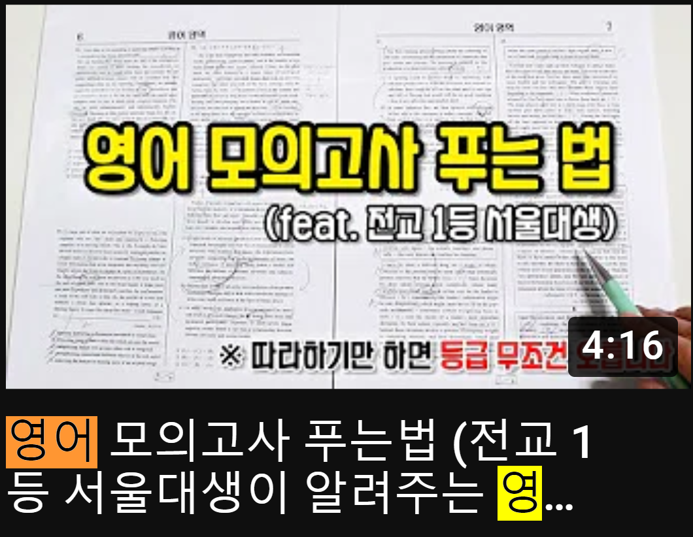

- [1]소린 TV 영어 모의고사 tip
- [2]또선생 영어 모의고사 푸는 순서
- [3]또선생 빈칸추론 푸는 tip
--------------------------------------------------------------------------------
소린 TV 영어 모의고사 tip

- 기준 잡고 풀기
- 간단화(기준 불분명할때)
- 역발상
1. 기준 잡고 풀기
1)기준=핵심문장
2)기준 잡고 뒷부분 예측하고, 예측이 맞는지 아닌지 따져보며 읽기